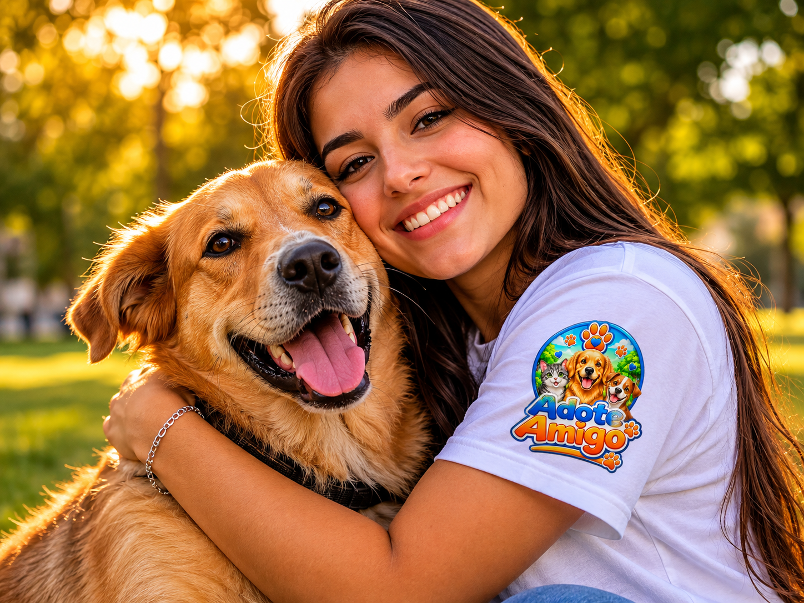
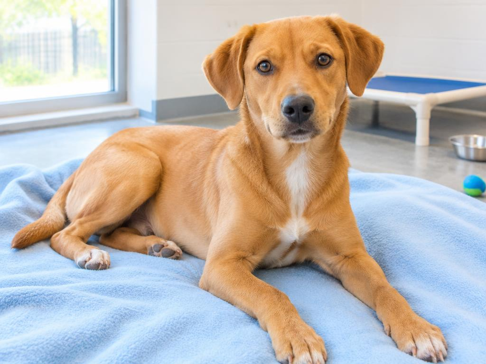

Adote Petz
Uma ponte entre animais e novos lares.
Instituição Verificada ✓ Site oficial ↗Sua jornada de adoção simplificada, transparente e 100% focada no bem-estar animal.
Conhecer minha jornada → Gratuito para você. Transformador para eles.
Você encontra. A ONG acolhe. Juntos, vocês escrevem o próximo capítulo.
Reunimos animais de diversas ONGs em um só lugar, com filtros inteligentes de Espécie, Porte, Idade, Pelagem e ONG Parceira.
Cada pet possui uma página individual com fotos, traços de personalidade, peso, histórico e selo da instituição responsável.
Não vendemos animais nem cobramos taxas. Ao clicar em “Quero Conhecer”, você é direcionado para o contato oficial do abrigo responsável.
A ONG realiza o processo de entrevista e visita para garantir um lar seguro e cheio de amor.
Uma rede de cuidado. Uma causa em comum.
Uma ponte entre animais e novos lares.
Instituição Verificada ✓ Site oficial ↗Visibilidade para quem procura uma família.
Instituição Verificada ✓ Site oficial ↗
Encontros que transformam vidas.
Instituição Verificada ✓ Site oficial ↗Amizade não tem preço.
Instituição Verificada ✓ Site oficial ↗Proteção animal e novos começos.
Instituição Verificada ✓ Site oficial ↗Fotos, personalidade e cuidados: cada perfil aproxima você de quem pode fazer parte da sua família.

Perfil demonstrativoCãozinho dengoso em busca de um lar.
Instituição responsável · Exemplo Fictício
WhatsApp ou e-mail oficial da ONGTransparência em cada etapa. Carinho em cada escolha.
A adoção acontece diretamente com a ONG responsável.